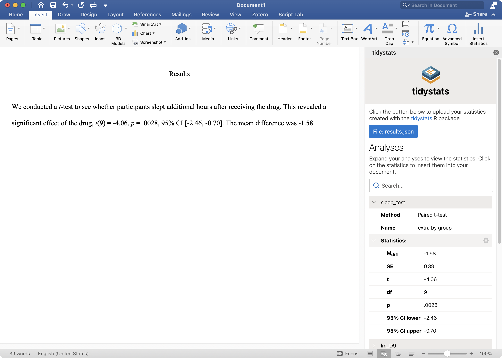

The tidystats Word add-in can be used to report statistics in a Microsoft Word document, using a file created with the tidystats R package.
The tidystats Word add-in is available in the Office Add-in store. You can find this store in your Word document by going to the Add-in section of the Insert tab. Simply search for 'tidystats' and you should find the add-in.
Once installed, a button saying 'Insert Statistics' will be added to the Insert tab of your Word document.
Using the tidystats add-in is relatively straightforward. You open the tidystats add-in by clicking on the 'Insert Statistics' button found in the Insert pane of your Word document. After tidystats opens, click on 'Upload statistics' to select the file created with the tidystats R package. This will reveal a list of analyses. Click on the dropdown arrows to reveal the statistics of each analysis.
You can click on an individual statistic or on a list of statistics (by clicking on 'Statistics:') to insert statistics into your document, at the location of your cursor.
It is possible to customize exactly which statistics will be reported when inserting multiple statistics. Click on the gear icon next to 'Statistics:' to reveal checkboxes next to each statistic. By default, all checkboxes are checked. Unchecking a checkbox will prevent that statistic from being inserted when inserting multiple statistics at once.
You can update reported statistics by uploading a new file and clicking on the 'Update statistics' button. This will automatically update all reported statistics with the statistics from the new file. Note: This requires that the identifier of each analysis is kept the same.
Below is an example of how to use several features of the tidystats add-in.
Do you have a question or comment, such as a feature request, about tidystats? Check out the support page for ways to contact me.